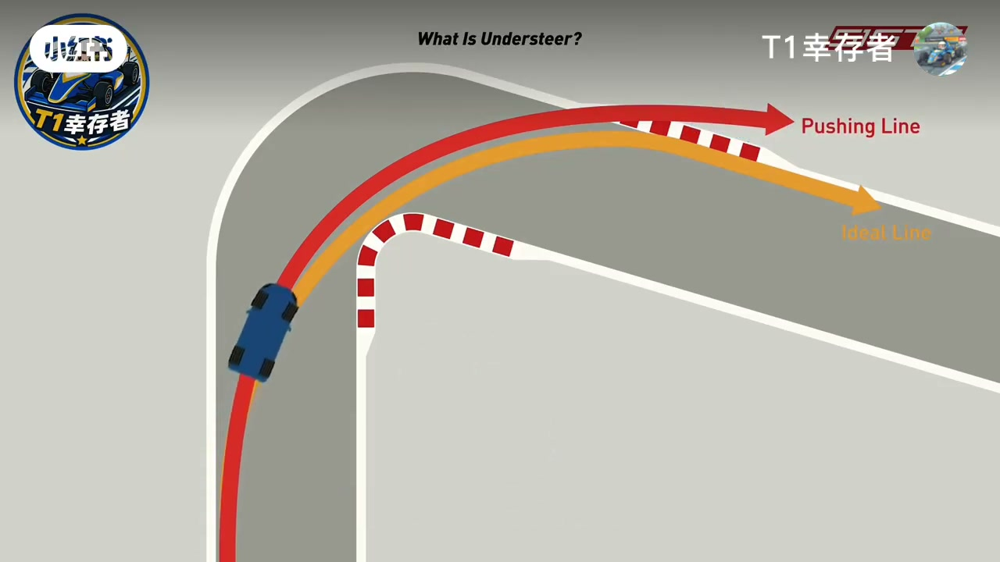
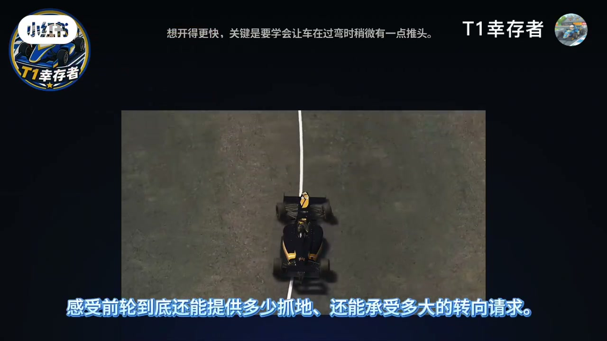
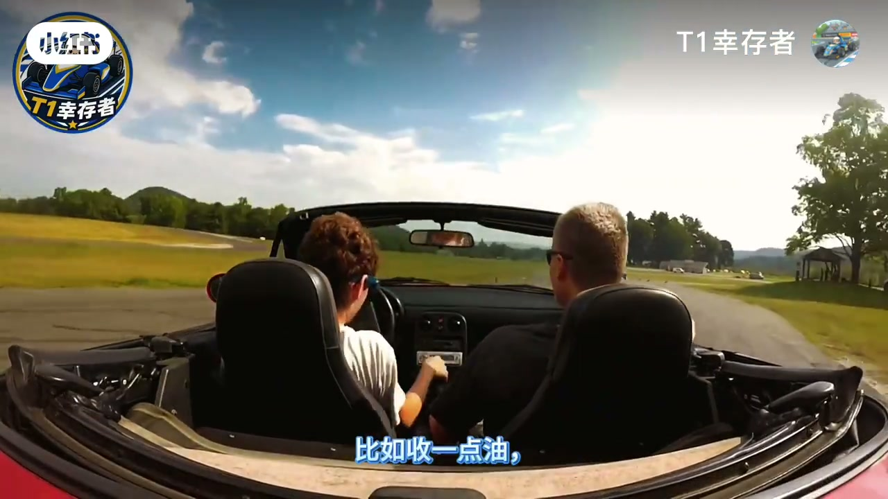
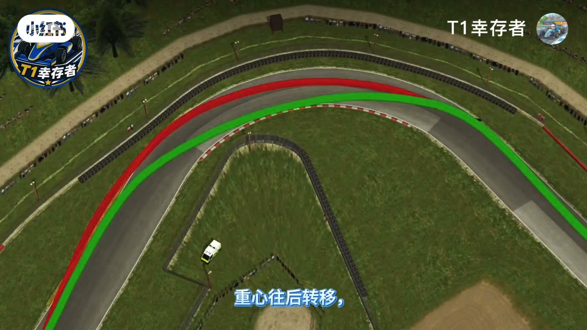
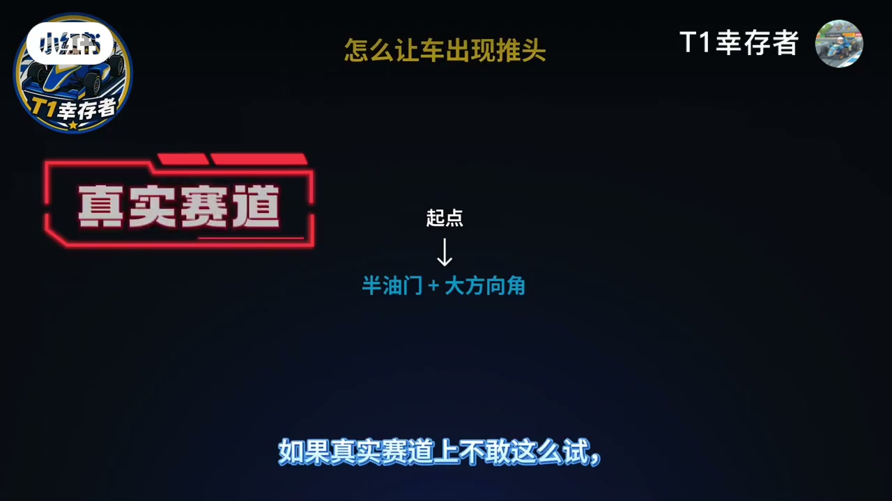
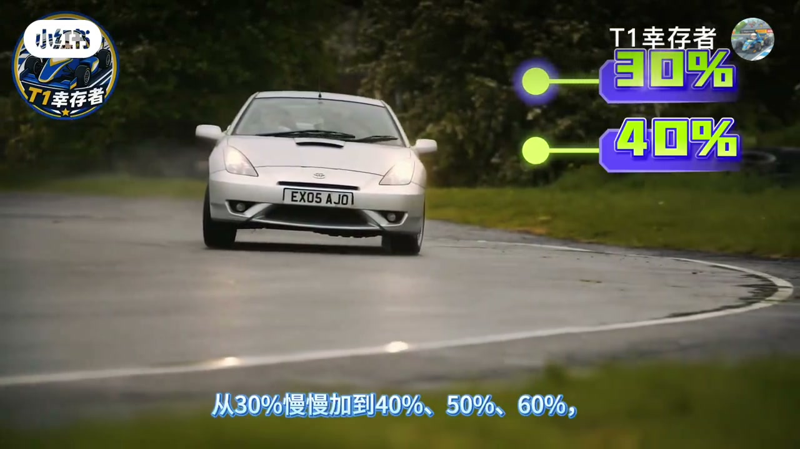

内容要点
「T1幸存者」把转向不足当成认识车辆极限最安全的入门课：主动把前轮推向抓地边界，直到车头刚开始往外推。讲清油门如何改变前后负重，并给出赛道/模拟器练习法——半油门加大转角、弯中不碰刹车。
知识结构
转向不足最可控；是试探更高极限的基准。
收油前轮增重更咬弯；加油前轮减重易外推。
弯中加油；重刹又打太多方向（含 ABS 外推感）。
半油门+大方向；弯前刹完；可进阶「晚一点再推头」。
先学会「做出并维持推头」，你才真正摸到前轮极限；油门深浅就是前后轴抓地的开关，别一上来就练甩尾。
00:00-01:48用转向不足当极限入门
想知道极限不一定等失控：可以把前轮一点点推向抓地极限，直到车头刚开始往外推——那是前轮在说「我快撑不住了」。转向不足最容易控制，也最适合入门；赛车过弯极限大致分转向过度与转向不足两边，本期从不足这一边主动接近。
逻辑：前轮发出转向请求，车身与后轮因惯性仍想沿原方向走。收一点油，重量前移，前轮抓地增强、车头更愿意进弯；加油更多则重量后移，前轮负重减少，更容易外推。若前轮抓地很强、后轮跟不上，则可能变成转向过度。



01:48-02:40方向盘上的感觉与两种触发
落到方向盘上：明明打了不少方向，预期转 30 度实际只转 20 度，就是典型转向不足。常见两种：弯中加油后重心后移、前轮抓地下降而外推；或刹车踩得很重同时方向打太多，前轮抓地不够——无 ABS 时锁死会直着外冲，有 ABS 仍会明显外推，感觉很像转向不足。

02:40-04:06半油门大转角练习法
练习选最容易出感觉的组合：保持半油门，再把方向打大一点。真赛道不敢可先上 iRacing 练习场大平原找手感。本轮刹车全部在入弯前完成，弯中不碰刹，单纯用方向和油门感受加油后前轮变轻、车头外推。目标是把转向不足做明显，并尽量维持到出弯、用满赛道宽度。
进阶：不要一入弯就推头，先正常入弯，接近弯心再主动让前轮失抓，并沿正确赛车线维持到出弯外侧。操作上方向打大后逐步加油（约 30%→60%）；大马力车小心后轮空转把推头瞬时变成甩尾甚至 spin，故先专攻半油门摸清前轮边界。下期预告练主动甩尾与回救。


完整转录（140段）
以下文本由 Whisper medium 模型自动转录，可能存在少量识别误差，已尽可能修正。
想知道一台车的极限在哪
不一定非得等它失控
你可以主动把前轮一点点推向抓地极限
直到车头刚开始往外推
这个瞬间就是前轮在告诉你我快撑不住了
而转向不足正是认识车辆极限最容易控制
也最适合入门的方式
先把这种感觉摸透
你才真正开始知道一台车到了极限会发生什么
为什么要专门练怎么把车弄成转向不足
因为这是了解车辆极限最安全
也最可控的起点
而且你能提前知道车到了极限以后会怎么反应
一台赛车过弯的极限可以大致分成两边
一边是转向过度
一边是转向不足
我们先从转向不足这一边开始
主动去接近它
感受前轮到底还能提供多少抓地
还能承受多大的转向请求
这个感觉就是一个基准
以后你想继续试探更高层次的车辆极限
都得从这里起步
说白了先学会控制转向不足
就是认识车辆极限的第一步
以后你才能在更高的层面上跟车配合
但这一步必须先迈出去
转向不足背后的逻辑其实很简单
前轮发出一个转向请求
想把车带向你打方向的地方
而车身和后轮因为惯性
还想继续沿著原来的方向往前走
我们可以通过油门去改变车辆前后的负重
比如收一点油
重量会更多的转移到前轮
前轮的抓地会增强
车头也更愿意往弯里走
转过来油门加得更多
重量往后转移
前轮负重减少
车头就更容易往外推
但如果前轮的抓地越来越强
而后轮的抓地开始跟不上
车尾有可能转得太多
最后变成转向过度
所以你可以把它理解成
前轮想把车带进弯
后轮和车身还想继续往前走
而车辆的状态就取决于前后轮这两边的抓地
到底谁先到极限
落到方向盘上的感觉
就是车转的没有你想要的那么多
明明已经打了不少方向
心里预期车身一秒能转过30度
实际却只转了20度
这就是典型的转向不足
看到这里大家若觉得视频
会对你有一些帮助
我想请你帮我关注
点赞 投币 收藏
你的支持对我非常重要
是我继续创作下去的动力
常见的情况有两个
一个是弯中给油之后
重心往后转移
前轮抓地下降
车头开始往外推
另一个是煞车踩得很重的同时
又加了太多方向
前轮的抓地已经不够用了
没有ABS时
前轮一旦锁死
车基本就会直著往外冲
有ABS虽然还能保留一点转向能力
但车依然会明显往外推
感觉和转向不足非常相似
所以练习时
就选一个最容易找到感觉的方式
保持半油门
再把方向打大一点
这个组合比较容易制造出
明显的转向不足
也更方便你去感受它
如果真实赛道上不敢这么试
可以先去iRacing的练习场
有一个像一个大平的场一样的场地
先把感觉找熟了
再回到正常赛道
记住
这一轮练习里
煞车全部在入弯前完成
弯中不要碰煞车
我们就单纯靠方向和油门去感受给油之后
前轮负重变轻
抓地下降
车头开始一点点往外推的感觉
在这个练习里
重点就是把转向不足做得明显一点
并且尽可能长时间的维持住
最好一直保持到出弯
把赛道宽度全部用完
如果想确认自己
是不是真的能控制住转向不足
还可以再加一个进阶要求
不要一入弯就马上推头
先正常入弯
等到稍晚一点
比如接近弯心的位置
再主动让前轮开始失去抓地
然后继续保持这种推头状态
沿著正确的赛车线
一直把车带到出弯外侧
这样练的就不只是制造转向不足
而是能不能让它在你想要的时间出现
并且一直控制到出弯
这个练习不追求速度
重点还是找手感
操作上
方向打大之后逐步增加油门
从30%慢慢加到40%
50% 60%
油门越深
车头往外推的感觉就越明显
但大马力赛车要格外小心
油门给的太多
后轮很容易开始空转
一旦后轮失去抓地
原本的推头可能瞬间变成甩尾
甚至直接spin
所以练习时还是尽量控制在半油门左右
先专门去让前轮接近极限
把转向不足的感觉摸清楚
这期我们一起学习了半油门大转角
把转向不足尽量做得明显
让前轮持续推头
同时通过油门深浅
去感受前轮抓地力的边界
等这套感觉熟悉以后
下一步就反过来练主动让车尾甩起来
再练怎么把它救回来